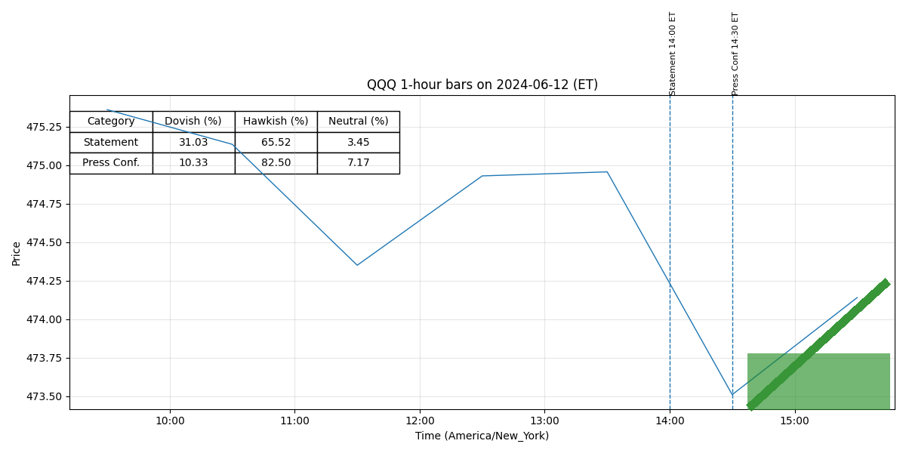

For release at 2:00 p.m. EDT July 31, 2024 Recent indicators suggest that economic activity has continued to expand at a solid pace. (0.457)
Job gains have moderated, and the unemployment rate has moved up but remains low. (0.600)
Inflation has eased over the past year but remains somewhat elevated. (0.511)
In recent months, there has been some further progress toward the Committee’s 2 percent inflation objective. (0.491)
The Committee judges that the risks to achieving its employment and inflation goals continue to move into better balance. (0.529)
The economic outlook is uncertain, and the Committee is attentive to the risks to both sides of its dual mandate. (0.489)
Voting for the monetary policy action were Jerome H. Powell, Chair; John C. Williams, Vice Chair; Thomas I. Barkin; Michael S. Barr; Raphael W. Bostic; Michelle W. Bowman; Lisa D. Cook; Mary C. Daly; Austan D. Goolsbee; Philip N. Jefferson; Adriana D. Kugler; and Christopher J. Waller. (0.799)
Austan D. Goolsbee voted as an alternate member at this meeting. (0.711)
For release at 2:00 p.m. EDT July 31, 2024 Decisions Regarding Monetary Policy Implementation The Federal Reserve has made the following decisions to implement the monetary policy stance announced by the Federal Open Market Committee in its statement on July 31, 2024: • The Board of Governors of the Federal Reserve System voted unanimously to maintain the interest rate paid on reserve balances at 5.4 percent, effective August 1, 2024. (0.512)
• As part of its policy decision, the Federal Open Market Committee voted to direct the Open Market Desk at the Federal Reserve Bank of New York, until instructed otherwise, to execute transactions in the System Open Market Account in accordance with the following domestic policy directive: "Effective August 1, 2024, the Federal Open Market Committee directs the Desk to: (0.532)
o Conduct standing overnight repurchase agreement operations with a minimum bid rate of 5.5 percent and with an aggregate operation limit of $500 billion. (0.729)
o Conduct standing overnight reverse repurchase agreement operations at an offering rate of 5.3 percent and with a per-counterparty limit of $160 billion per day. (0.759)
o Roll over at auction the amount of principal payments from the Federal Reserve's holdings of Treasury securities maturing in each calendar month that exceeds a cap of $25 billion per month. (0.508)
o Reinvest the amount of principal payments from the Federal Reserve's holdings of agency debt and agency mortgage-backed securities (MBS) received in each calendar month that exceeds a cap of $35 billion per month into Treasury securities to roughly match the maturity composition of Treasury securities outstanding. (0.545)
o Allow modest deviations from stated amounts for reinvestments, if needed for operational reasons. (0.756)
o Engage in dollar roll and coupon swap transactions as necessary to facilitate settlement of the Federal Reserve's agency MBS transactions."" (0.559)
For release at 2:00 p.m. EDT June 12, 2024
Recent indicators suggest that economic activity has continued to expand at a solid pace. (0.461)
Job gains have remained strong, and the unemployment rate has remained low. (0.582)
Inflation has
eased over the past year but remains elevated. (0.511)
In recent months, there has been modest further
progress toward the Committee’s 2 percent inflation objective. (0.463)
The Committee judges that the risks to achieving its employment
and inflation goals have moved toward better balance over the past year. (0.506)
The economic outlook
is uncertain, and the Committee remains highly attentive to inflation risks. (0.429)
Voting for the monetary policy action were Jerome H. Powell, Chair; John C. Williams,
Vice Chair; Thomas I. Barkin; Michael S. Barr; Raphael W. Bostic; Michelle W. Bowman; Lisa
D. Cook; Mary C. Daly; Philip N. Jefferson; Adriana D. Kugler; Loretta J. Mester; and
Christopher J. Waller. (0.791)
For release at 2:00 p.m. EDT June 12, 2024
Decisions Regarding Monetary Policy Implementation
The Federal Reserve has made the following decisions to implement the monetary policy stance
announced by the Federal Open Market Committee in its statement on June 12, 2024:
• The Board of Governors of the Federal Reserve System voted unanimously to maintain the
interest rate paid on reserve balances at 5.4 percent, effective June 13, 2024. (0.518)
• As part of its policy decision, the Federal Open Market Committee voted to direct the Open
Market Desk at the Federal Reserve Bank of New York, until instructed otherwise, to
execute transactions in the System Open Market Account in accordance with the following
domestic policy directive:
"Effective June 13, 2024, the Federal Open Market Committee directs the Desk to: (0.526)
Conduct standing overnight repurchase agreement operations with a minimum bid
o
rate of 5.5 percent and with an aggregate operation limit of $500 billion. (0.724)
Conduct standing overnight reverse repurchase agreement operations at an
o
offering rate of 5.3 percent and with a per-counterparty limit of $160 billion per
day. (0.761)
Roll over at auction the amount of principal payments from the Federal Reserve's
o
holdings of Treasury securities maturing in each calendar month that exceeds a
cap of $25 billion per month. (0.508)
Reinvest the amount of principal payments from the Federal Reserve's holdings of
o
agency debt and agency mortgage-backed securities (MBS) received in each
calendar month that exceeds a cap of $35 billion per month into Treasury
securities to roughly match the maturity composition of Treasury securities
outstanding. (0.536)
Allow modest deviations from stated amounts for reinvestments, if needed for
o
operational reasons. (0.769)
Engage in dollar roll and coupon swap transactions as necessary to facilitate
o
settlement of the Federal Reserve's agency MBS transactions."" (0.552)